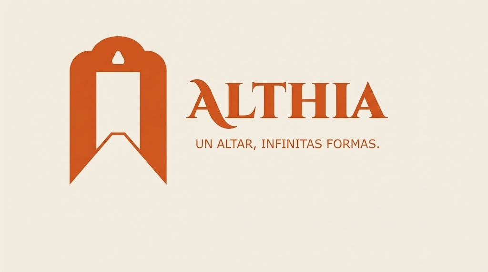
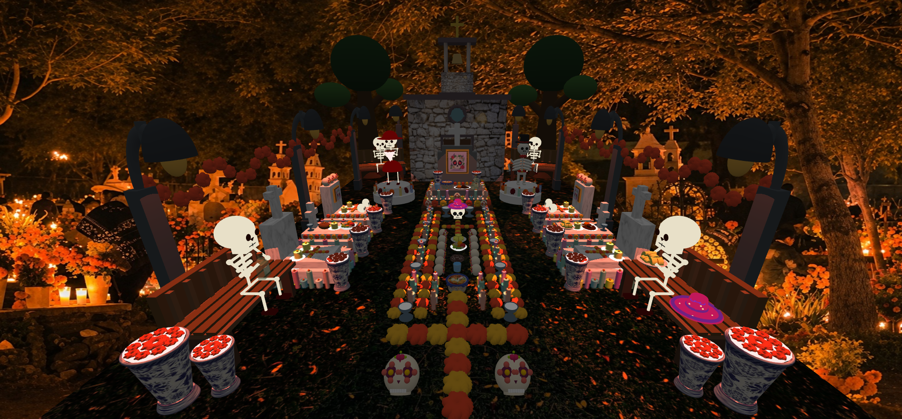

CULTURA · HISTORIA · IDENTIDAD
Tradiciones
Mexicanas
México es un país lleno de historia, colores y costumbres. En Raíces y Aroma celebramos nuestras raíces y buscamos compartir la riqueza de nuestra cultura a través del arte, la gastronomía y la tecnología.
NUESTRA IDENTIDAD
Un legado que vive en nuestras raíces
Las tradiciones mexicanas representan nuestra historia, nuestras creencias y la identidad que compartimos como sociedad. Cada celebración conserva recuerdos y costumbres que pasan de generación en generación.

NUESTRA EMPRESA PRINCIPAL
Althia: innovación y cultura
En Althia reconocemos el valor de nuestras tradiciones mexicanas y la importancia de mantenerlas presentes en nuestra sociedad.
A través de nuestros proyectos buscamos integrar la creatividad, la tecnología y la cultura, desarrollando experiencias que permitan conocer nuestras costumbres desde nuevas perspectivas.
Esta visión también se relaciona con Raíces y Aroma, un espacio donde la gastronomía, el arte y las tradiciones mexicanas se unen para ofrecer experiencias que conectan con nuestra identidad.
UNA TRADICIÓN QUE NOS REPRESENTA
Día de Muertos: recordar es mantener viva nuestra historia
El Día de Muertos es una de las celebraciones más representativas de México. Durante estas fechas las familias preparan ofrendas para recordar y honrar a sus seres queridos.
Las flores de cempasúchil, las veladoras, las fotografías, el papel picado y los alimentos son algunos de los elementos que dan vida a esta tradición, cada uno con un significado especial.
Más que una celebración, es una manera de mantener presente nuestra historia, nuestros recuerdos y el cariño hacia quienes forman parte de nuestra vida.

CONOCE SUS SIGNIFICADOS
Elementos de una ofrenda mexicana
Cada elemento que colocamos en una ofrenda tiene un significado especial y representa una parte de esta hermosa tradición.
Cempasúchil
Sus colores y aroma representan una guía simbólica para recordar a nuestros seres queridos.
Veladoras
Representan la luz y la esperanza, iluminando el camino de las ánimas.
Fotografías
Permiten recordar y rendir homenaje a las personas que forman parte de nuestra historia.
Pan de muerto
Es uno de los alimentos tradicionales que representa la unión y el recuerdo familiar.

TECNOLOGÍA AL SERVICIO DE LA CULTURA
Una ofrenda que cobra vida en realidad virtual
Como parte de los proyectos desarrollados en Althia, se realizó una experiencia de realidad virtual inspirada en una ofrenda del Día de Muertos.
Este proyecto utiliza herramientas digitales y un entorno tridimensional para representar una ofrenda mexicana, permitiendo que los visitantes puedan explorar sus elementos de una manera interactiva.
Con esta propuesta buscamos demostrar que la tecnología también puede ser una herramienta para preservar, difundir y compartir nuestras tradiciones con nuevas generaciones.
Explorar ofrenda virtual ✨NUESTRA ESENCIA
Raíces y Aroma: donde la cultura se disfruta
En Raíces y Aroma compartimos la visión de Althia de mantener vivas nuestras raíces mexicanas. Nuestra cafetería busca representar la riqueza cultural de México mediante sus sabores, su arte y sus espacios.
A través de nuestra propuesta gastronómica y cultural, queremos que cada persona encuentre un lugar donde pueda disfrutar de nuestras costumbres, conocer nuevas experiencias y sentirse conectada con nuestra identidad.
Donde la cultura se disfruta y el arte cobra vida.Nuestras tradiciones merecen seguir vivas
Te invitamos a descubrir la cultura mexicana desde diferentes perspectivas, donde la historia, el arte y la innovación se encuentran para crear experiencias únicas.
Descubrir nuestro menú →